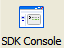

The Google App Engine local app server includes a web-based console for browsing the local datastore and interacting with the live application using Python code. You can use the Launcher to access this console with a click of a button.
To open the local app server console:
Make sure the local app server for the project is running. (See Running a project with a local app server.)
Click the "SDK Console" button.

Or: Select the menu option Control > SDK Console.
Or: Press Control-K.
A web browser window opens with the local app server console for the application.
To list datastore entities of a given kind in the local app server's datastore for an application:
Open the local app server console, as described above.
In the console, make sure "Datastore Viewer" is selected.
Enter the name of the datastore kind in the "Entry Kind" field. For example, the guestbook demo application has entities with a kind of "Greeting".
Click the "List Entities" button. A list of datastore entities of the given kind for the running application is displayed. You can select entities to edit property values and delete entities.
To create a new datastore entity in the local app server's datastore for an application:
Open the local app server console, as above.
In the console, make sure "Datastore Viewer" is selected.
Enter the name of the datastore kind for the entity you want to create in the "Entry Kind" field. For example, the guestbook demo application has entities with a kind of "Greeting".
Note: The local app server datastore must contain at least one entity of the given kind for you to be able to create it from the console. The console is unaware of data models the application may have defined, and must base the structure of the new entity on an existing entity.
Enter data for the property values. Click the "Save Changes" button. The entity is created.